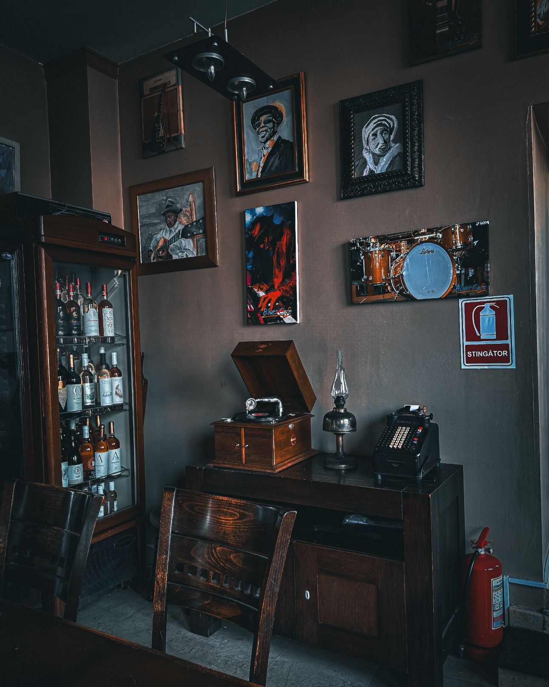
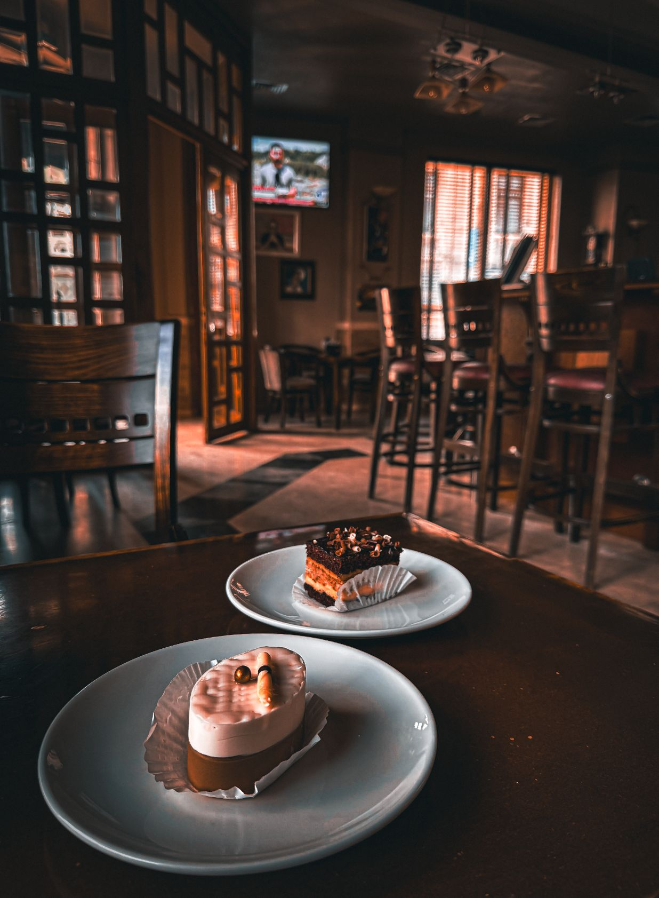
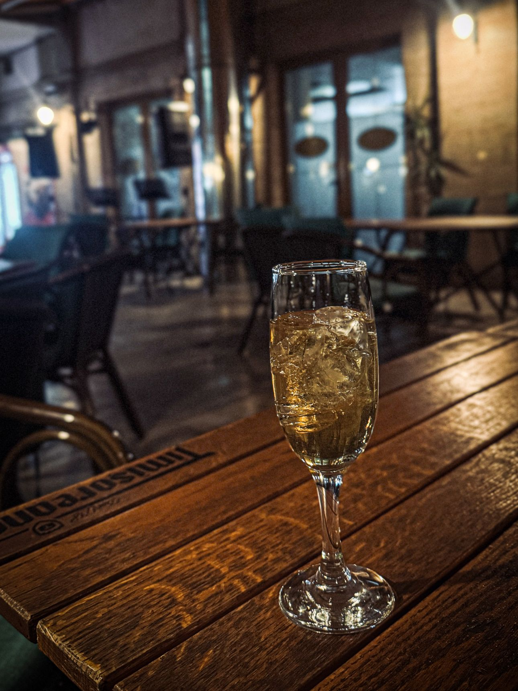
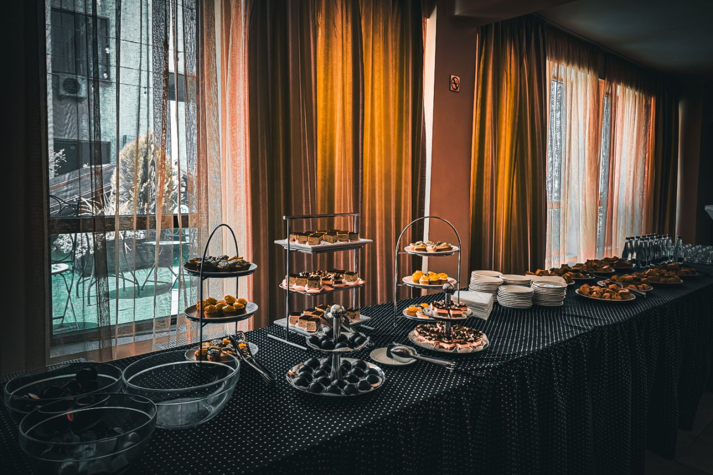

PRACTICĂ & MARKETING
Marketing Hotel Central Ploiești
Pe parcursul stagiului de practică, am coordonat elementele vizuale și strategia de conținut pentru Hotelul Central din Ploiești, asigurând o prezență digitală modernă și coerentă.
Management Social Media
Utilizarea Meta Business Suite pentru planificarea și analiza performanței postărilor.
Creare Conținut Vizual
Fotografie de produs și editare digitală pentru prezentarea meniurilor și a facilităților.
Identitate de Brand
Asigurarea unei estetici unitare pe toate canalele oficiale de comunicare.
Fotografii realizate în cadrul orelor de practică




Meniu Nunți 2025
Concept vizual și layout pentru prezentarea ofertei de evenimente a hotelului.
Vizualizează PDF